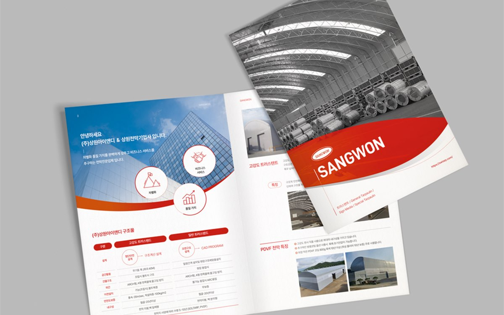
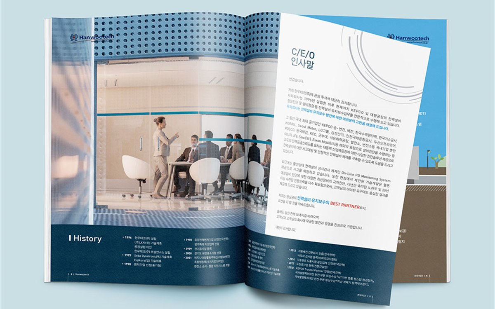

핵심 요약
① 카탈로그 리뉴얼은 디자인 교체가 아니라 '현재 파는 제품 목록'을 다시 확정하는 일에서 시작해야 합니다.
② 사양표는 기존 표를 고치지 말고 비교 기준(모델·규격·용량·옵션)부터 새로 정한 뒤 다시 그려야 영업 현장에서 쓰입니다.
③ 사진은 전부 재촬영하지 않아도 되고, 대표 제품 30%만 새로 찍고 나머지는 보정·누끼로 통일해도 완성도가 나옵니다.
안녕하세요, 퍼스트디자인 대전지사입니다. 대덕산업단지와 문평동, 신탄진 일대 제조기업에는 10년 넘게 쓰는 제품 카탈로그가 많습니다. 단종된 제품이 그대로 실려 있고, 신제품은 낱장 전단으로 끼워 넣고, 표지 디자인은 창업 초기 그대로인 카탈로그입니다. 리뉴얼을 미루는 이유는 대부분 '전부 다시 만들어야 할 것 같아서'입니다. 오늘은 전부 다시 만들지 않고도 카탈로그를 바꾸는 순서를 정리해 드리겠습니다.
리뉴얼의 첫 단계는 왜 제품 목록 정리일까?
리뉴얼 상담을 시작하면 저희가 가장 먼저 요청하는 것은 디자인 참고 자료가 아니라 '현재 판매 중인 제품 목록'입니다. 오래된 카탈로그일수록 실려 있는 제품과 실제로 파는 제품이 다릅니다. 단종 제품을 빼고, 신제품을 넣고, 이름이 바뀐 제품을 정리하면 페이지 수가 30% 정도 줄어드는 경우가 흔합니다. 페이지가 줄면 디자인비와 인쇄비가 함께 줄어듭니다.
목록을 정리할 때는 영업 담당자에게 '고객이 카탈로그에서 가장 먼저 찾는 제품 5개'를 묻습니다. 그 제품이 카탈로그 앞부분에 오고, 나머지는 용도나 규격 순서로 뒤에 배치합니다. 회사가 자랑하고 싶은 제품 순서가 아니라 고객이 찾는 순서로 재배열하는 것이 리뉴얼의 핵심입니다.

사양표는 왜 고치지 말고 새로 그려야 할까?
10년 된 카탈로그의 사양표는 제품이 추가될 때마다 열이 하나씩 늘어난 흔적이 남아 있습니다. 모델마다 표기 단위가 다르고, 어떤 표에는 있는 항목이 다른 표에는 없습니다. 이런 표를 부분 수정하면 어색함만 남습니다. 저희는 사양표를 만들기 전에 비교 기준을 먼저 정합니다.
| 정할 것 | 기준 예시 |
| 비교 항목 순서 | 모델명 → 규격 → 용량 · 출력 → 재질 → 옵션 → 인증, 모든 표에 같은 순서 |
| 단위 · 자릿수 | mm · kg · kW로 통일, 소수점 첫째 자리까지 |
| 없는 값 표기 | 빈칸 대신 '－' 또는 '별도 문의'로 통일 |
| 도면 · 치수도 | CAD 파일 기준 벡터로 다시 그려 선 굵기 통일 |
이 기준이 정해지면 이후 신제품이 나와도 같은 틀에 넣기만 하면 되기 때문에 다음 리뉴얼 주기가 훨씬 짧아집니다.
사진은 어디까지 다시 찍어야 할까?
사진 전부를 재촬영하면 비용과 기간이 크게 늘어납니다. 저희는 사진을 세 그룹으로 나눕니다. 표지와 대표 제품처럼 크게 실리는 사진은 새로 찍고, 사양표 옆에 작게 들어가는 제품 사진은 기존 사진을 보정하고 배경을 제거해 통일하며, 도면으로 대체할 수 있는 부품 사진은 도면으로 바꿉니다. 이렇게 하면 전체 제품의 30% 정도만 재촬영해도 카탈로그 전체가 새로 만든 것처럼 보입니다.
재촬영은 대덕산단·문평동 공장으로 촬영팀이 직접 방문해 진행합니다. 생산 라인이 멈추지 않는 시간대에 맞춰 일정을 잡고, 큰 설비는 현장에서 조명을 세팅해 촬영합니다.
리뉴얼 일정과 비용은 어떻게 잡을까?
32페이지 카탈로그 기준으로 제품 목록 정리 1주, 사양표 기준 확정과 촬영 1주, 디자인 2주, 교정과 인쇄 1주로 5주 정도가 표준입니다. 비용은 재촬영 범위와 페이지 수에서 갈리기 때문에 목록 정리가 끝나면 두 가지 안(최소 재촬영안·전면 재촬영안)으로 견적을 드립니다.
인쇄 수량은 전시회와 영업 방문 계획을 기준으로 잡되, 사양이 자주 바뀌는 회사는 1년 치만 옵셋으로 인쇄하고 이후 디지털 인쇄로 보충하는 방식을 권합니다. PDF 카탈로그와 홈페이지용 웹 카탈로그도 같은 데이터로 함께 만들어 드립니다.
자주 묻는 질문
Q. 문평동 금속 가공 업체인데 기존 카탈로그 디자인 파일이 없습니다. 리뉴얼이 되나요?
A. 네. 인쇄본을 기준으로 제품 목록과 사양을 정리하고 새 틀로 다시 만듭니다. 오히려 기존 파일에 얽매이지 않아 구조를 깔끔하게 잡을 수 있습니다.
Q. 신제품이 계속 나오는데 카탈로그를 매번 다시 찍어야 하나요?
A. 제품군별로 분권하거나, 본책은 옵셋으로 찍고 신제품은 같은 디자인의 낱장 시트를 디지털로 추가하는 방식을 권합니다. 사양표 틀이 통일되어 있으면 낱장 추가도 자연스럽습니다.
Q. 영문판도 같이 리뉴얼할 수 있나요?
A. 네. 국문판 확정 후 자체 번역 부서가 번역하고 영문 레이아웃을 다시 잡아 1~2주 안에 납품합니다. 수출 상담용으로 국·영문 합본으로 만드는 방법도 있습니다.
Q. 대덕산단으로 와서 상담해 주시나요?
A. 네. 기존 카탈로그와 제품 목록을 펼쳐 놓고 현장에서 정리하는 편이 빠릅니다. 전화 1600-9487로 요청해 주세요.
퍼스트디자인 대전지사
대덕연구단지와 정부대전청사, 세종·청주·공주 충청권의 연구기관·바이오 기업·공공기관·제조기업 홍보물을 전담합니다. 기획·디자인·번역·촬영·인쇄를 한 팀에서 처리하고, 자체 인쇄소에서 소량 디지털 인쇄부터 대량 옵셋 인쇄까지 직접 진행합니다. 초안을 먼저 확인받고 진행하는 방식으로 12년간 3,200건 이상을 납품했습니다.
- 12년+편집 디자인 경력
- 3,200+납품 프로젝트
- 98%재의뢰 · 소개
- 400+정부지원사업 수행
대덕산단·문평동·신탄진 제조기업의 제품 카탈로그 리뉴얼과 인쇄가 필요하시면 기존 카탈로그 한 부만 보내주세요. 제품 목록 정리부터 촬영·인쇄까지 한 팀이 진행합니다. 상담은 1600-9487(평일 09:00~18:00) 또는 work@firstmkt.co.kr로 문의해 주세요. 대전·세종·충청권은 직접 방문 미팅도 가능합니다.